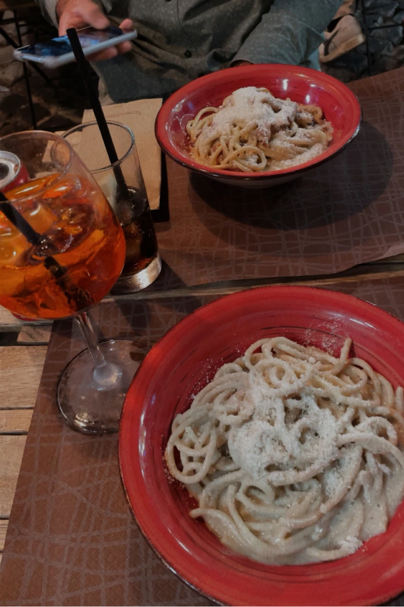
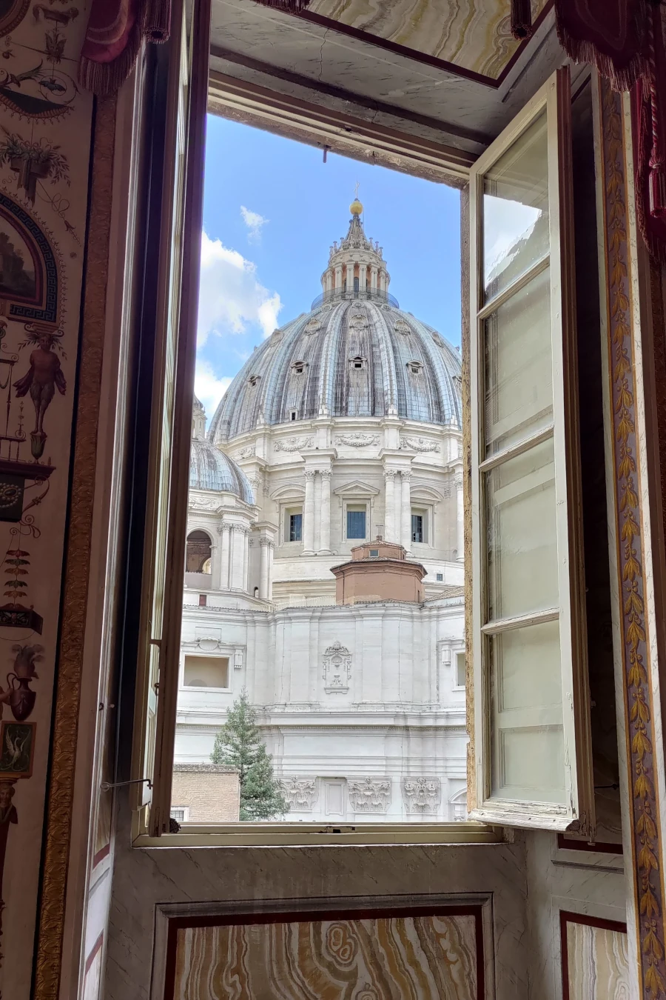
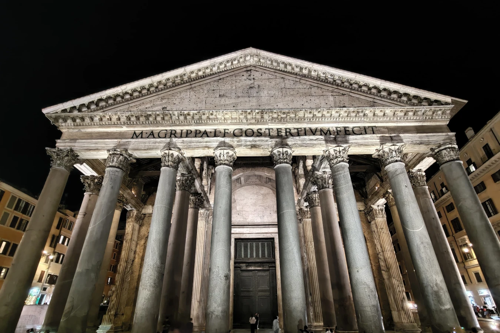

Rom


Essen
- Come 'na Vorta Pasta e Vino Oseteria - Trastevere
- Pizza in Trevi
- Gelato
- Supplì: Reiskroketten mit Mozzarella gefüllt


Sehenswürdigkeiten
- Kolosseum
- Petersdom
- Forum Romanum
- Trevi Brunnen
- Pantheon